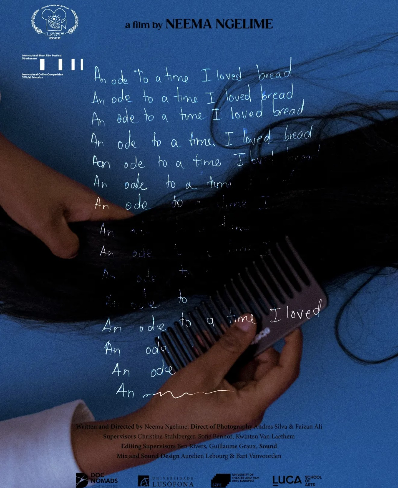

Neema Ngelime
The Tanzanian director turned a doctor's diagnosis into her first feature documentary. Since August, The Ones With the Tempered Flowers has picked up eight awards, in Switzerland, South Africa and Nairobi, and its main shoot is still to come.
Thirty-nine awards were handed out at this year's Durban FilmMart in South Africa. Five of them went to one project: The Ones With the Tempered Flowers, the first feature documentary from Tanzanian director Neema Ngelime. No other project at the market won more than four.
Thirteen days later, the same project won again, this time in Nairobi. Back in August, it had already taken two prizes at the Locarno Film Festival in Switzerland. That's eight awards in under three months, for a film that doesn't exist yet in finished form. It is still in development, and the main shoot is planned for 2027.
Projects at this stage don't usually make headlines. This one has, and the story behind it, and the woman telling it, explain why.
Who she isPhotographer first
Ngelime is a documentary photographer as well as a filmmaker, and both sides of her work start in the same place: everyday life, and especially the lives of women. On her Berlinale Talents profile she describes herself as “constantly trying to weave stories about Africa and the African Diaspora through an experimental and feminist lens.”
Her photography is built around portraits, mostly of women, and around a question she keeps returning to: how African people are shown, and who gets to do the showing. It's the same instinct that runs through her films. She is less interested in the familiar version of a story than in the one that hasn't been told yet, often her own.
The trainingThree cities, three short films
She sharpened that eye at DocNomads, a joint master's in documentary filmmaking taught across Lisbon, Budapest and Brussels. The short films she made in that period have already travelled further than most debut work does.
A Country in a Corner was selected for the short documentary competition at IDFA in Amsterdam in 2022. IDFA is the world's biggest documentary festival.

An Ode to a Time I Loved Bread, an 11-minute short, goes back to her years at a boarding school with colonial roots. Instead of interviews, she rebuilt those memories with collage and animation, looking back at the rules she followed as a teenager from where she stands today. The film screened at the London Short Film Festival and at the Oberhausen International Short Film Festival in Germany, one of the oldest short film festivals in the world, both in 2022.
A third short, Hooyo, Why Here?, screened at Beldocs, the Belgrade documentary festival. Her work has also been shown by the New York African Film Festival. In 2023 she was selected for Berlinale Talents, the Berlin International Film Festival's programme for emerging filmmakers, where The Ones With the Tempered Flowers was already listed as her project in development.
The filmA diagnosis becomes a film
The film started with a doctor's appointment. Ngelime was told that having children might be difficult for her, and that moment became the seed of the project.
It made her look again at the expectations of womanhood that had shaped her life. The Ones With the Tempered Flowers follows her as she questions those expectations and studies her own body's relationship to herself and to society. Its themes include fertility, religion, identity, and the weight placed on women's bodies in Tanzania.
Ngelime directs the film and is also its subject. It isn't a conventional fly-on-the-wall documentary. It is participatory and performative: her family takes part in performing parts of the story, and the film mixes observed family moments with constructed archives, stop-motion animation and visual effects. Anyone who has seen An Ode to a Time I Loved Bread will recognise the approach. This time, it's at feature length.
The teamTanzania and Kenya
Ngelime is making the film with Kenyan producer Ivy Kiru, which makes it a Tanzania–Kenya co-production. It is produced through two Nairobi companies, LBx Africa and Kiru's AQ Pictures, and the project was developed in part through LBx Africa and Berlinale Talents.
Kiru has been busy on more than one front this year. In May, she was at the Cannes Film Festival with Kenyan filmmaker Lydia Matata, presenting their feature project Strong Wind through La Fabrique Cinéma, a Cannes programme for filmmakers from the Global South.
The runEight awards, three countries
All eight awards came at film markets and industry programmes, where projects still being made are pitched to funders, festivals and co-producers. Most of the prizes are doors rather than trophies: places at major documentary markets, plus some real money.
Locarno, August. The run started at Open Doors, the Locarno Film Festival's co-production and talent programme, which is in the second year of a cycle focused on Africa. The programme's top grant was shared by projects from Uganda, Somalia and Ghana. The Ones With the Tempered Flowers left with two awards: the ARTEKino International Award, worth €6,000 towards development, and the Sørfond Award, a place at the Sørfond Pitching Forum in Norway this November.
Durban, October. The 17th Durban FilmMart ran from 9 to 12 October. The project was one of 12 documentaries selected for the market's Pitch and Finance Forum, and when the awards were announced on the final day, it won five: more than any other project there. The NFVF Best Non-fiction Award, from South Africa's National Film and Video Foundation, comes with a R100,000 grant. The other four are places at some of the most important documentary events in the world in 2027: DOK Leipzig in Germany, Sheffield DocFest in the UK, Movies That Matter in the Netherlands and Visions du Réel in Switzerland.
Nairobi, October. Two weeks later, the seventh NBO Film Festival closed in Nairobi. This year's festival ran from 15 to 25 October under the theme “Cinema for Us”, and expanded its industry programme with the NBO Project Showcase, where projects in development are pitched to industry professionals. At the closing ceremony on 25 October, The Ones With the Tempered Flowers won the NBO Film Festival Development Award, a KSh 250,000 cash prize.
What's nextThe road to a finished film
For all the awards, the hardest part is still ahead. The film is in late development, with about €90,000 of its €400,000 budget secured. The team is talking to European broadcasters and co-producers to close the gap, and the main shoot is planned for July 2027 in Tanzania.
That's where this year's prizes matter most. Each 2027 market place puts the film, and its director, back in the rooms where documentaries find partners and money. The Sørfond forum in Norway this month is the next date on the calendar.
Why watch herRemember the name
A feature documentary can take years to reach a screen, and this one is no exception. But there is a reason juries in three countries have backed it before a single day of the main shoot: a director with a clear voice, an experimental way of working that has already proved itself in her short films, and a deeply personal story that speaks to how women across East Africa are expected to live.
If you want to follow the journey, Ngelime is on Instagram at @thebongolese.
Sources
- Sinema Focus: Durban FilmMart 2026 awards (Oct 2026)
- Lifestyle & Tech: 17th Durban FilmMart awards, 12 October 2026
- Variety: The Ones With the Tempered Flowers wins big at Durban FilmMart
- Daily Monitor: East African filmmakers scoop awards at Durban FilmMart
- Sinema Focus: Kenyan and regional projects pitching at Durban FilmMart 2026
- Streamlined: Durban FilmMart to present 36 projects in rescheduled October edition
- The Hollywood Reporter: The Ones With the Tempered Flowers at Locarno Open Doors
- ScreenAnarchy: Locarno 2026, three African projects share Open Doors grant
- Screen Daily: Uganda, Somalia and Ghana projects share top prize at Locarno's Open Doors
- Sinema Focus: Locarno Open Doors 2026 winners (Aug 2026)
- Sinema Focus: Neema Ngelime and Ivy Kiru at Locarno Open Doors (Aug 2026)
- ProductionList: The Ones With the Tempered Flowers eyes July 2027 shoot
- allAfrica: NBO Film Festival announces 2026 award winners
- Sinema Focus: NBO Film Festival 2026 winners
- Capital FM: NBO Film Festival kicks off its 7th edition
- Deeds Magazine: Nairobi film festival returns with Cinema for Us
- Afrocritik: Nigeria, Kenya, Morocco represent Africa at La Fabrique Cinéma 2026
- Berlinale Talents: Neema Ngelime
- African Film Festival NY: Neema Ngelime
- African Film Festival NY: An Ode to a Time I Loved Bread
- Emergent Art Space: A Reliable Narrator, Neema Ngelime
- Photomonth: Neema Ngelime
- Catalyst Planet: 15 African travel creators to follow
- IDFA: A Country in a Corner
- DocNomads: DN films selected at IDFA